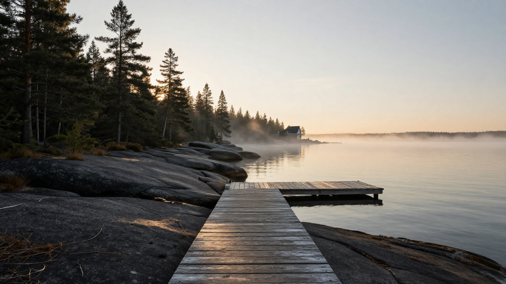

Waterfront ownership

Few questions cause more quiet confusion along Georgian Bay than a simple one. Where does a waterfront property end, and where does the public beach begin? Owners assume they know. Buyers assume the fence line tells the story. Often, neither is right.
In the Township of Tiny, the strip of sand between a cottage and the water can belong to any one of several owners. Two neighbouring homes on the same stretch of shoreline can hold entirely different rights to the beach in front of them. This guide explains how shoreline ownership works here, why it became so layered, and the practical steps a homeowner or buyer can take to learn exactly what they own. It is meant as neutral information and a starting point for your own due diligence, not as legal advice.
Six ways a Georgian Bay shoreline can be owned
The Township of Tiny recognizes six distinct ownership scenarios for the land running down to the water. Identifying which one applies to a given property is the entire question.
A shoreline may be held by a First Nation to the water's edge, as at Christian Island. It may be provincially owned, as at Awenda Provincial Park. It may be Township-owned, which covers portions of well-known public beaches including Woodland Beach, Bluewater Beach, Jackson Park Beach, Balm Beach, and Lafontaine Beach, among other municipal properties. It may sit under communal ownership, as at Rowntree Beach, where a defined group of owners shares the land. It may be held in individual private ownership right down to the water. And in some cases, ownership is simply unknown, because the historical record does not clearly establish who holds title.
That final category tends to surprise people, but it reflects the reality of land surveyed and patented more than a century ago, long before modern record-keeping.
The piece that trips everyone up: the shore road allowance
Most of the confusion along Ontario shorelines traces back to a single feature of the original Crown surveys, the shoreline road allowance.
When surveyors laid out these townships in the 1800s, they commonly reserved a strip of land, typically 66 feet wide (one surveyor's chain), running inland from the high-water mark along lakes and navigable waterways. The purpose was practical for its time. The strip provided continuous public passage along the water for travel and for moving goods. That transportation role is long gone, and today these allowances tend to matter for conservation, recreation, and access questions instead.
Here is where it gets complicated. Over the decades, many of these original shore road allowances were sold or transferred to the adjoining property owners. Others were never closed and remain publicly held. So one home may sit on a lot where the owner also purchased the road allowance in front of it, meaning the title runs to the water. The home next door may sit on a lot where that 66-foot strip is still a public allowance, even though it looks and feels like part of the yard. Where a shore road allowance remains publicly owned, work on it such as clearing vegetation, building a structure, or landscaping generally requires municipal permission, and environmental rules from conservation authorities and provincial or federal agencies can apply no matter who holds title.
The result is that two houses side by side can hold genuinely different rights to the same beach, depending on what each owner did, or failed to do, generations earlier. It is one of the core checks in the broader waterfront due diligence checklist.
Deeded access is a separate question
Who owns the sand is one question. Who holds the right to cross it is another. Many interior properties in cottage country were sold with deeded beach access, a right of way to reach the water across land the owner does not own.
On this point the Township is direct. It does not confirm title or easements for any deeded beach access to or from any particular private property. The municipality will not tell you whether your deed carries a valid access right. That answer comes from reviewing the deed and title with a lawyer. If beach access was part of what drew you to a property, confirming that the right is real, current, and enforceable is worth doing before you rely on it.
Why this keeps ending up in court
Shoreline boundaries in Tiny have a long history of litigation, which says something about how genuinely contested this ground can be. The Township's own record points to disputes over Plan 779 in 2013 and 2014, controversies involving Block B of Plan 656 and Woodland Beach that reached the Court of Appeal between 2012 and 2015, and original road allowance survey questions between Concessions 18 and 19 that drew Surveyor General rulings and multiple appeals from 2011 to 2013.
The lesson is not that waterfront ownership is a minefield to be feared. It is that these boundaries reward being established carefully and in writing, rather than assumed from how a property has been used or from where a fence happens to sit.
How to find out what you actually own
Whether you are a current owner or a prospective buyer, the Township and standard real estate practice point to a clear sequence for reaching certainty.
Begin by contacting the Township to confirm whether the beach in question is municipally owned. Tiny has made significant efforts to sign and demarcate many of its beaches, which helps identify public land. If municipal ownership is ruled out, the Land Registry Office in Barrie holds the title records that show how the parcel and any road allowance were patented and transferred over time. To establish physical boundaries on the ground, an Ontario Land Surveyor can prepare an updated survey. To interpret title, easements, and any deeded access, a real estate lawyer can provide a formal legal opinion.
For most buyers, the practical version is simple. Build the survey and title review into your conditions, and do not waive them on a waterfront property until the shoreline question has been answered in writing.
The bottom line
Along Georgian Bay, waterfront describes a lifestyle. It does not automatically describe title. The beach in front of a Tiny Township home might run to your name at the water, sit as a public allowance, be held communally, or rest in records that no longer resolve cleanly. The only way to know is to check the deed, the registry, and the survey. Knowing the answer before you buy, or before you build, is what separates a confident waterfront purchase from an expensive surprise.
If you are weighing a purchase or sale along the Georgian Bay shoreline and want help reading the ownership picture on a specific property, tell Jonathan Wallace what you are looking at, or start with a free, no-obligation valuation if you have a waterfront property to sell.
This article offers general information for the Tiny Township and Georgian Bay area and is not legal advice. Ownership, access rights, and municipal policies vary by property and change over time. Confirm any property with the Township of Tiny, the Land Registry Office, an Ontario Land Surveyor, and a licensed real estate lawyer. Jonathan Wallace, Salesperson, Faris Team Real Estate, Brokerage. 705-433-2525.